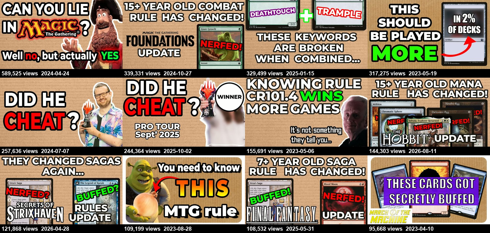
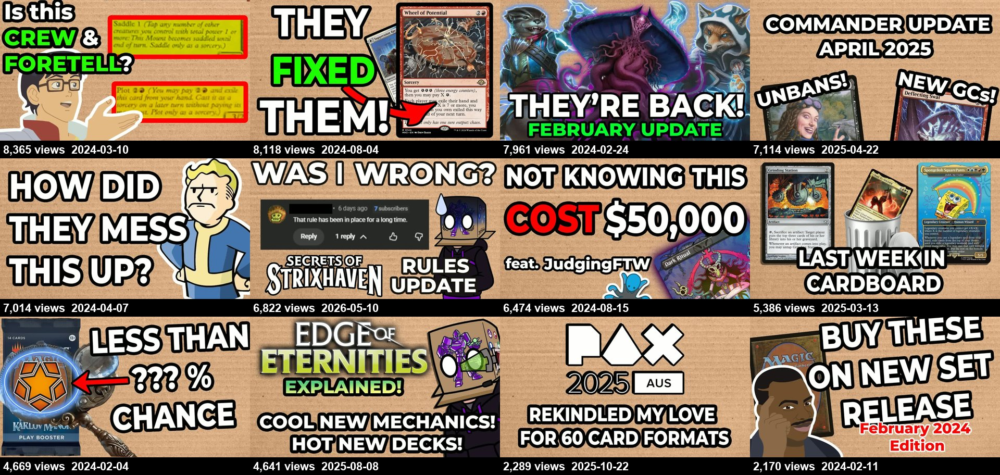
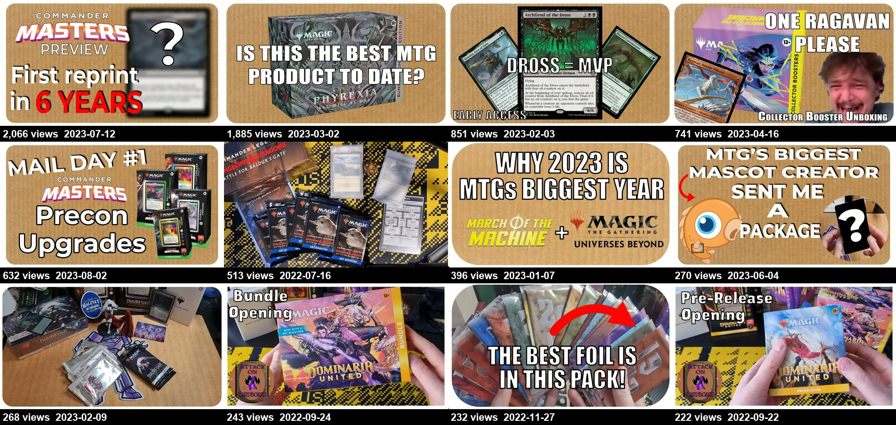
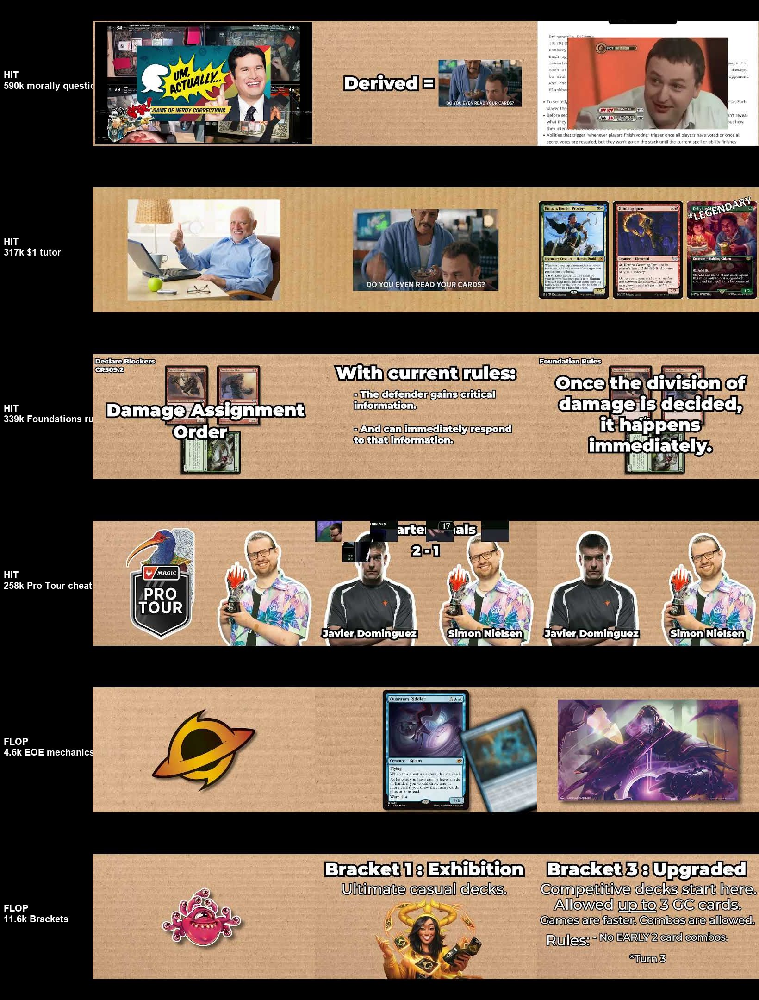
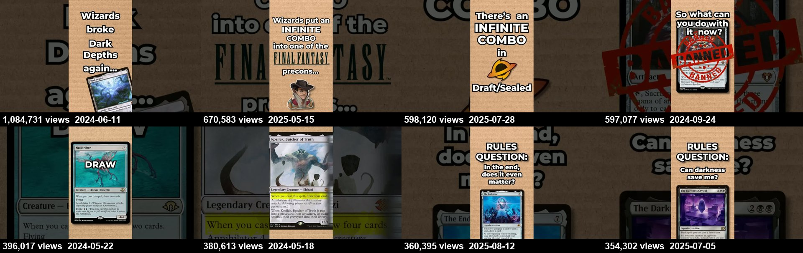

Attack on Cardboard spent its first nine months opening packs to a few hundred viewers. Then it started explaining rules that players get wrong, and one video in April 2023 did 35 times the channel's usual views. This is what made it grow, where it is leaking, and a roadmap built from the evidence.
The channel became the place to settle a rules argument. Rules explainers and rules-change videos hold medians of 66k and 93k views. Deckbuilding sits at 7k and unboxings at 392.
Every time Wizards changes a rule, a video follows. The six big ones did 93k–339k each, and the most recent is the fastest-growing video the channel has made.
"Can you lie in Magic?" did 590k and the two "Did the Pro Tour winner cheat?" videos did 258k and 244k. The channel's role is settling the argument, not joining it.
Shorts that pose a rules question or show a broken interaction have a median of 77k views. Other Shorts have a median of 8k. The top Short did 1.08M.
Each dot is a long-form video, placed by upload date and lifetime views on a log scale. Until spring 2023, everything sits under 25k views. The first rules-change video (10 Apr 2023) and two beginner rules explainers in May reset the ceiling, and it never came back down.
| Date | Views | Format | Title |
|---|
The same host, voice, editing style and thumbnail template produced a 200× spread in median views, depending only on format. The channel's audience wants answers. It doesn't want product, news, or the host's life.
The cardboard background, heavy white caps and cut-out images appear on the hits and the flops alike, so the template isn't what separates them. The difference is the premise. Every top thumbnail asks one yes/no question or announces a change with stakes: "Did he cheat?", "15+ year old rule has changed!", "Can you lie in Magic?". The flops label a topic: "Edge of Eternities explained!", "Commander update April 2025", "PAX 2025".



These frames come from 25%, 50% and 75% of the way through each video. All six use the same faceless setup: a cardboard backdrop, card scans and cut-outs, with a box-headed avatar standing in for the host. The hits cut to recognisable reaction memes, real players with names on screen, and quoted rule numbers (CR 509.2). The flops show a set logo and card art, with no person and no conflict.

The transcripts show the same split. Hits state the stakes in the first sentence. Flops open with a sponsor read, a ritual phrase, or a hedge.
Wizards just updated a 15-year-old rule that players use in every game.Mana abilities update, Aug 2026
Can you lie to your opponents in a game of Magic in order to win? Surprisingly the answer isn't a straightforward yes or no.Morally questionable rule, Apr 2024
A more than 15-year-old combat rule is changing with the launch of Foundations.Foundations combat change, Oct 2024
This video is sponsored by Wizards of the Coast. Edge of Eternities is out…EOE mechanics, Aug 2025
Here is everything you need to know about the new Commander bracket system beta. Now I want to preface this…Commander brackets, Feb 2025
Thanks to our friends at Wizards of the Coast we have a Dominaria United pre-release box to open.Prerelease unboxing, Sep 2022
Pace also separates them. Rules videos run at 145–170 words per minute. Unboxings and early-access streams drop to 70–95 wpm, with long silences while packs are opened.
Shorts only took off once they copied the long-form lane. The 2022 pack-opening Shorts did a few hundred views each. When the channel switched to "Wizards broke this card" and "RULES QUESTION:" Shorts around Modern Horizons 3 (May–June 2024), Shorts from that quarter pulled 2.3M views. The format is a single question on screen, one card, and a cardboard background.

Long-form uploads per quarter went from 6–11 in 2024 to 3, 0, 2 and 1 across the last four quarters. Demand hasn't dropped: the Aug 2026 mana-abilities video is gaining about 3,300 views a day, the fastest in the channel's history. The channel is producing too little, not losing its audience.
The channel has streamed 65 hours across 25 streams since late 2024, for 11.7k views in total (a median of 400 per stream). Q2 2025 had 10 streams and 4 long-form videos. That time would have been better spent on rules videos.
14M views but only 35.7k subscribers. Most viewers search a rules question, get the answer and leave. The personal videos show it: the PAX vlog did 2.3k and the video about a viewer did 14.6k. The brand is the answer, not the personality.
Tarkir did 25k, Aetherdrift 18.7k and Edge of Eternities 4.6k. Every creator and Wizards itself cover this on release day. It's a commodity, and a set-name-first title gives a searcher no problem to solve.
The Pro Tour cheating videos did 258k and 244k, but the Worlds 2025 version did 16.8k because there was less uproar that time. These videos can't be scheduled. Treat them as opportunistic bonus uploads, not a pillar of the plan.
"I need to clarify something" (6.8k) followed a 122k video. "Wheel of Potential is FIXED" (8.1k) followed a 48.6k one. Corrections belong in a pinned comment, a Short or a community post, not in a full video.
Several top thumbnails and frames use film stills and celebrity reaction memes. They work, but they invite copyright claims and sponsor hesitancy. The channel already owns an original mascot (the box-head) and uses it too rarely.
This plan assumes you're starting a new channel and want to use the same engine: be the trusted answer in a game where rules are contested and change often. Each phase ends with a gate, a condition to hit before moving on.
Gate: a written lane statement ("the channel that settles ___ rules arguments"), 40 titled ideas and a working thumbnail template.
Gate: at least 12 long-form videos and 36 Shorts published, with at least one Short at 10× your Shorts median. Then double down on that Short's topic in long-form.
Gate: two rule-change videos published within 72 hours of the change, and subscribers growing every week without a new hit.
Gate: at least 60% of long-form uploads are rules explainers, rule changes or controversy rulings, and a steady 1 long-form + 3 Shorts a week.
Track each video's views at 7 days against the median of your last 10 uploads (the same "multiple" used in this report), Shorts median views, subscribers gained per 1,000 views, and publishing latency after rule changes. YouTube Studio also has click-through rate and average view duration. This report couldn't see those metrics for Attack on Cardboard, so treat the format conclusions here as starting points to confirm against your own analytics.
View, like and comment counts are lifetime totals scraped with yt-dlp on 24 Sep 2026. Four uploads couldn't be fetched because of YouTube's bot check. Formats were assigned by keyword rules on titles, so a few borderline videos could reasonably sit in a neighbouring bucket. Transcripts are auto-captions, so hook quotes are lightly cleaned. There was no access to CTR, retention, traffic sources or subscriber history, which only the channel owner can see. The analysis scripts and raw data are in the analysis/ folder of the repo.